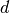
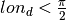

Navigation Calculations Module¶
The navigation module computes range and bearing between two points.
It leverages the igrf11 module to compute compass bearing from
true bearing.
A “rhumb line” (or loxodrome) is a path of constant bearing, which crosses all meridians at the same angle.
Sailors navigate along rhumb lines because it is easier to follow a constant compass bearing than to be continually adjusting the bearing to follow a great circle. Rhumb lines are straight lines on a chart that uses the Mercator projection.
Rhumb lines are generally longer than great-circle (orthodrome) routes. For instance, London to New York is 4% longer along a rhumb line than along a great circle – important for aviation fuel, but not particularly to sailing vessels.
Navigation Module Design¶
The navigation module contains domain objects and calculations.
The domain objects include the following:
- A coordinate point (
LatLon) is a pair of angles, . Each of these values is anAngle. - The angle definition (
Angle,Lat, andLon) includes the various format conversions from human friendly notations in degrees, minutes, seconds with hemisphere. It also includes formatting into these human-friendly notations.
A central design question is the packaging of the calculations themselves. There are two choices:
- Stand-alone functions.
- Methods of the
LatLonclass.
We have a handy range-bearing function,  , which offers two
parts, one of which is the haversine function:
, which offers two
parts, one of which is the haversine function:
The destination function, , has (almost) two parts, also. It can also be seen as a single object, which is a coordinate pair.
Stand-alone functions like these fit the mathematical definitions in a simple and precise way. The code would look like the following:
d, b = distance_bearing( p1, p2 )
This is preferred.
The alternative, method functions of the LatLon class, have a
problem in clarity. The arguments to the function are textually
separated by the method name, like this:
d, b = p1.distance_bearing( p2 )
With this syntax, the coordinates p1 and p2 lose the obvious “peer” relationship
For this reason, the various calculations are implemented as
stand-alone functions, not method functions of the LatLon class.
Module Docstring¶
"""Navigation Calculations.
Definition of LatLon, Lat, Lon, and Angle.
Functions range_bearing, destination, and declination.
"""
Overheads¶
import math
import re
from . import igrf11
import datetime
import numbers
import string
Problem Domain Objects¶
An essential feature of the navigation calculations is that Latitude and Longitude are actually angles. They appear (on a Mercator chart) to be planar Cartesian coordinates, but they’re actually a pair of angles measured from the center of the earth.
A point on the surface has two angles: latitude is the angle normal to the equator and longitude is the angle normal to the Greenwich meridian.
AngleParser¶
This is used to parse a input string values. We try four distinct formats. The value returned, ultimately, is a signed degree value.
This is used by Angle2 to parse a string.
See Angle2.fromstring().
The sign() method converts the signs from “N”, “S”, “E”, and “W”
to +1 or -1.
The parse() method attempts a sequence of conversions ranked
in order from simple to complex.
class AngleParser:
"""Parse a sting representation of a latitude or longitude.
>>> AngleParser.parse("76.123N")
76.123
>>> AngleParser.parse("76.123S")
-76.123
>>> AngleParser.parse("Due North") # doctest: +ELLIPSIS
Traceback (most recent call last):
...
ValueError: Cannot parse 'Due North'
"""
Parsing patterns.
dms_pat= re.compile( r"(\d+)\D+(\d+)\D+(\d+)[^NEWSnews]*([NEWSnews]?)" )
dm_pat= re.compile( r"(\d+)\D+(\d+\.\d+)[^NEWSnews]*([NEWSnews]?)" )
d_pat= re.compile( r"(\d+\.\d+)[^NEWSnews]*([NEWSnews]?)" )
navx_dmh_pat= re.compile( r"(\d+)\D+(\d+\.\d+)[^NEWSnews]*([NEWSnews]?)" )
Sign conversion.
@staticmethod
def sign(txt):
return {"N": +1, "S": -1, "E": +1, "W": -1}.get(txt.upper(), +1)
Static method to parse a text value, returning signed degrees as a float value.
Parameters: value – text to parse Returns: float degrees or a ValueErrorexception.
@staticmethod
def parse(value):
d= AngleParser.d_pat.match( value )
if d:
deg = float(d.group(1))
return AngleParser.sign(d.group(2))*deg
dm= AngleParser.dm_pat.match( value )
if dm:
d, m = int(dm.group(1)), float(dm.group(2))
return AngleParser.sign(dm.group(3))*(d + m/60)
dms= AngleParser.dms_pat.match( value )
if dms:
d, m, s = int(dms.group(1)), int(dms.group(2)), float(dms.group(3))
return AngleParser.sign(dms.group(4))*(d + m/60 + s/3600)
navx= AngleParser.navx_dmh_pat.match( value )
if navx:
d, m = float(navx.group(1)), float(navx.group(2))
return AngleParser.sign(navx.group(3))*(d + m/60)
raise ValueError( "Cannot parse {0!r}".format(value) )
It’s possible to create a slight generalization to the parsing
approach. If we use r"(?P<d>...)(?P<m>...)..." then a pattern will
have some combination of groups named ‘d’, ‘m’ and ‘s’. We can then
use code like float(m.groupdict('0').get('m')) to get a value, or supply ‘0’
as a default.
Doing this would allow us to step through a sequence of regular expressions looking for a match.
Angle2 Class¶
Fundamentally, the calculations we’re interested in,
range_bearing() and destination(), work
with radians. An Angle2 is a signed radians number,
an extension to built-in float.
Our source and target presentations
are various kinds of Degree-Minute-Second values.
The Angle2 class includes a number of conversion and parsing
features.
Generally, we create an Angle2 from one of these sources:
float: create anAngle2from a floating-point value in degrees. Thefromdegrees()static method does this.string: attempts a number of DMS conversions. Thefromstring()static method does this.This is implemented via the separate
AngleParserobject. We can extend the parsing without actually changing the baseAngle2class. Formats includedd mm ss.sss,dd mm.mmm,dd.dddd, anddd\\xbcdd.dddfrom GPX files.Angle2: This is the ordinaryAngle2(someangle)which will use a value which is expressed in radians.
There are two subclasses of representations for those angles:
Lat– Latitude – with a 0°-90° range and a sign expressed as “N” or “S”.Lon– Longitude – with a 0°-180° range and a sign expressed as “E” or “W”.
This works nicely because the complex features are related to formatting and parsing.
The rest of the life of a Lat or Lon is merely as a float value of signed radians.
Here’s the class and docstring, which shows the features of this class.
class Angle2(float):
"""A signed angle in radians. Lots of conversions to DMS.
A subclass can treat the sign ("h") as the hemisphere,
using "N", "S", "E", or "W".
Note that we have to "prettify" some values to
remove annoying 10E-16 noise bits that arise sometimes.
>>> import math
>>> a = Angle2(-math.pi/6)
>>> round(a,3)
-0.524
>>> round(a.radians,3)
-0.524
>>> round(a.degrees,3)
-30.0
>>> round(a.sdeg,3)
-30.0
>>> round(a.deg,3)
-30.0
>>> a.dm
(-30, 0.0)
>>> a.dms
(-30, 0, 0.0)
>>> a.h
-1
>>> round(a.r,3)
-0.524
# Formmatter.
>>> fmt, prop = Angle2._rewrite("%02.0d° %2.5m'")
>>> fmt
"{d:02.0f}° {m:2.5f}'"
>>> sorted(prop)
['d', 'm']
>>> "Lat: {0:%02.0d° %6.3m'}".format(a)
"Lat: 30° 0.000'"
# Another round-off test.
>>> a2 = Angle2(math.pi/12)
>>> a2.dms
(15, 0, 0.0)
# Math.
>>> round( a+a2, 5 )
-0.2618
>>> round( (a+a2).degrees, 3 )
-15.0
"""
We’ve included the essential unit test cases here as a summary of the implemented feature set.
Creates an
Angle2from a numeric value, which must be degrees.Parameters: - deg – numeric degrees value.
- hemisphere – sign value, which can be encoded as “N”, “S”, “E”, or “W”. If omitted, it’s positive.
Returns: Angle2object.
@classmethod
def fromdegrees( cls, deg, hemisphere=None ):
"""
>>> a = Angle2.fromdegrees(45)
>>> round(a,4)
0.7854
>>> b = Angle2.fromdegrees(23.456, "N")
>>> round(b,4)
0.4094
"""
if hemisphere in ("N", "E", None): sign=+1
elif hemisphere in ("S", "W"): sign=-1
else: raise TypeError("Can't convert {0},{1}".format(value,hemisphere))
return cls( math.radians(sign*deg) )
-
navigation.fromdegrees(deg, hemisphere=None) Creates an
Angle2from a string value, which must be represent degrees, either as a simple string value, or as a more complex value recognized by theAngleParserclass.Parameters: - deg – string degrees value.
- hemisphere – sign value, which can be encoded as “N”, “S”, “E”, or “W”. If omitted, it’s positive.
Returns: Angle2object.We start by assuming the text value is simply a string representation of a float. If it isn’t, we use the
AngleParserclass to parse the string.A subclass might change the
parserreference to use a different parser.
parser = AngleParser
@classmethod
def fromstring( cls, value ):
"""
Convert a string value of degrees.
Some sources provide a simple signed number.
Other sources include more complex formatting.
>>> a0 = Angle2.fromstring("-77.4325")
>>> round(a0.degrees,4)
-77.4325
>>> a1 = Angle2.fromstring("37°28'8\\"N")
>>> round(a1.degrees,4)
37.4689
>>> a2 = Angle2.fromstring("77°25′57″W")
>>> round(a2.degrees,4)
-77.4325
"""
try:
deg= float(value)
return cls( math.radians(deg) )
except ValueError:
pass
try:
deg= cls.parser.parse(value)
return cls( math.radians(deg) )
except ValueError:
pass
raise ValueError( "Cannot parse {0!r}".format(value) )
Here are the essential output conversions of an Angle2.
There’s a bit of redundancy in some methods which could be carefully parsed
out. But we haven’t done this refactoring.
@property
def radians(self):
return self
@property
def r(self):
return self
@property
def degrees(self):
return math.degrees(self)
@property
def sdeg(self):
return math.degrees(self)
@property
def deg(self):
return math.degrees(self)
@property
def dm( self ):
"""Returns the angle as (D, M).
:returns: (d, m) tuple of signed values
"""
sign= -1 if self < 0 else +1
ad= abs(self.deg)
d= int(ad)
ms= 60*(ad-d)
if abs(ms-60)/60 < 1E-5:
ms = 0.0
d += 1
return d*sign, ms*(sign if d == 0 else 1)
@property
def dms( self ):
"""Returns the angle as (D, M, S).
:returns: (d, m, s) tuple of signed values
"""
sign= -1 if self < 0 else +1
ad= abs(self.deg)
d= int(ad)
ms= 60*(ad-d)
if abs(ms-60)/60 < 1E-5:
ms = 0.0
d += 1
m= int(ms)
s= round((ms-m)*60,3)
return d*sign, m*(sign if d == 0 else 1), s*(sign if d==0 and m==0 else 1)
The h() property is the sign; the “hemisphere”.
A subclass like Lat and Lon will
override this to provide a string instead of an int value.
@property
def h(self):
return -1 if self < 0 else +1
Class spec: format specification for this value. Returns: text representation of this Angle2.The specification uses a number of
%{fmt}{prop}items. The{fmt}is a floating-point style specification, for example03.0. The{prop}is the property name:%d,%mand%sto show degrees, minutes, and seconds. Additional properties include%rto show radians and%hto show the hemisphere (“N”, “S”, “E”, or “W” are representations of the sign).This can lead to a fairly complex format specifications. A format request can look like this:
"Lat: {0:%02d° %06.3m'}".format(lat)Or perhaps this:"({0:%.5d}, {1:%.5d})".format(lat, lon)
We have an internal function, _rewrite(), which will parse a format specification
and then rebuild the format spec into something a bit more useful.
Once the format has been rewritten we can use the string.Formatter
to build the resulting output.
Here’s an intertesting complexity to this. There are several variant cases where we want different kinds of display values:
%d %m %smeans that degrees and minutes are integer values.%d %mmeans that degrees is an int and m is a float.%dmeans that degrees is a float.
To make this work, we note the pattern of {'d', 'm', 's'}, or {'d', 'm'}, or {'d'}
and determine the appropriate mix of int or float values to include.
spec_pat= re.compile(r"%([0-9\.#\+ -]*)([dmshr])")
formatter= string.Formatter()
@classmethod
def _rewrite(cls, spec):
"""Rewrite a "%x" spec into a "{x:fmt}" format.
Returns the revised format at the set of properties
used.
"""
if spec == "" or spec is None:
return "{d:f}", {'d'}
else:
used = set()
m= cls.spec_pat.search(spec)
# pattern group 0 is the detailed spec
# pattern group 1 is the 1-letter property (d, m, s, h, or r)
while m:
# Rewrite this item in the spec.
fmt, prop = m.groups()
spec= cls.spec_pat.sub("{{{prop}:{fmt}{tp}}}".format(
prop=prop, fmt=fmt, tp="s" if prop == "h" else "f"), spec, count=1)
used.add( prop )
# "Recursively" check for more items.
m= cls.spec_pat.search(spec)
return spec, used
def __format__(self, spec=""):
fmt_str, prop_set = self._rewrite(spec)
data = dict( h= self.h, r= self.radians )
if {'d', 'm', 's'} <= prop_set:
data['d'], data['m'], data['s'] = Angle2(abs(self)).dms
elif {'d', 'm'} <= prop_set and not {'s'} <= prop_set:
data['d'], data['m'] = Angle2(abs(self)).dm
elif {'d'} <= prop_set and not {'m', 's'} <= prop_set:
data['d']= abs(self.degrees)
return self.formatter.format(fmt_str, **data)
This class doesn’t override __repr__() or __str__(). Those methods
are features of float and do not need to be changed.
These are the core numeric object special methods, all of which simply appeal to the superclass
methods for the implementation. The results create new Angle2 objects,
otherwise, we behave just like a float.
def __add__( self, other ):
return Angle2( super().__add__(other) )
def __sub__( self, other ):
return Angle2( super().__sub__(other) )
def __mul__( self, other ):
return Angle2( super().__mul__(other) )
def __div__( self, other ):
return self.__truediv__(other)
def __truediv__( self, other ):
return Angle2( super().__truediv__(other) )
def __floordiv__( self, other ):
return Angle2( super().__floordiv__(other) )
def __mod__( self, other ):
return Angle2( super().__mod__(other) )
Reversed methods.
def __radd__( self, other ):
return Angle2( super().__radd__(other) )
def __rsub__( self, other ):
return Angle2( super().__rsub__(other) )
def __rmul__( self, other ):
return Angle2( super().__rmul__(other) )
def __rdiv__( self, other ):
return self.__rtruediv__(other)
def __rtruediv__( self, other ):
return Angle2( super().__rtruediv__(other) )
def __rfloordiv__( self, other ):
return Angle2( super().__rfloordiv__(other) )
def __rmod__( self, other ):
return Angle2( super().__rmod__(other) )
Unary methods.
def __abs__( self ):
return Angle2( super().__abs__() )
def __float__( self ):
return self
def __round__( self, ndigits=0 ):
return Angle2( super().__round__(ndigits) )
def __neg__( self ):
return Angle2( super().__neg__() )
def __pos__( self ):
return self
Comparison methods.
def __eq__( self, other ):
return super().__eq__(other)
def __ne__( self, other ):
return super().__ne__(other)
def __le__( self, other ):
return super().__le__(other)
def __lt__( self, other ):
return super().__lt__(other)
def __ge__( self, other ):
return super().__ge__(other)
def __gt__( self, other ):
return super().__gt__(other)
Additional special methods, not actually used within this application. But included for completeness.
def __trunc__( self ):
return Angle2( super().__trunc__() )
def __ceil__( self ):
return Angle2( math.ceil( self ) )
def __floor__( self ):
return Angle2( math.floor( self ) )
def __pow__( self, other ):
return Angle2( super().__pow__(other) )
def __rpow__( self, other ):
return Angle2( super().__rpow__(other) )
Lat Subclass of Angle¶
The Lat subclass introduces the hemisphere text of “N” and “S”
to represent the sign.
It will also use 2 digits as the default format for degrees.
class Lat(Angle2):
"""Latitude.
>>> a = Lat.fromdegrees(37.1234)
>>> repr(a)
'37°07.404′N'
>>> b = Lat.fromstring('37°07.404′N')
>>> round(b.degrees,4)
37.1234
"""
@property
def d(self):
return abs(super().d)
@property
def h(self):
return "S" if self < 0 else "N"
def __repr__(self):
return "{0:%02.0d°%06.3m′%h}".format(self)
@property
def north(self):
"""North latitude, positive "co-latitude".
Range is 0 to pi instead of -pi/2 to +pi/2.
"""
return self+math.pi/2
Lon Subclass of Angle¶
The Lon subclass introduces the hemisphere text of “E” and “W”
to represent the sign.
It will also use 3 digits as the default format for degrees.
class Lon(Angle2):
"""Longitude.
>>> a = Lon.fromdegrees(-76.5678)
>>> repr(a)
'076°34.068′W'
>>> b = Lon.fromstring('076°34.068′W')
>>> round(b.degrees,4)
-76.5678
"""
@property
def d(self):
return abs(super().d)
@property
def h(self):
return "W" if self < 0 else "E"
def __repr__(self):
return "{0:%03.0d°%06.3m′%h}".format(self)
@property
def east(self):
"""East longitude. Positive only."""
return (self+math.pi*2) % (math.pi*2)
LatLon Class¶
The essential problem-domain object is the “point”: a (lat, lon)
pair of Angle2 objects. The various functions work
with these objects. The main applications
will create these from input sources.
Once we have LatLon objects, we can apply calculations
to determine range and bearing. We can sum the ranges to compute
distance traveled and do other useful things.
class LatLon( object ):
"""A latitude/longitude coordinate pair.
This is a glorified namedtuple with additional properties to
provide nicely-formatted results.
:ivar lat: The latitude :py:class:`lat`.
:ivar lon: The longitude :py:class:`Lon`.
:ivar dms: A pair of DMS strings.
:ivar dm: A pair of DM strings.
:ivar d: A pair of D strings.
"""
Build a LatLon from a pair of values in degrees.
This tolerates a large number of variant input classes and string
formats because Angle2 can parse a number of formats.
def __init__( self, lat, lon ):
"""Build a LatLon from two values.
:param lat: the latitude, used to build an Angle2
:param lon: the longitude, used to build an Angle2
"""
if isinstance(lat, Lat):
self.lat= lat
elif isinstance(lat, Angle2):
self.lat= Lat(lat)
elif isinstance(lat, float):
self.lat= Lat.fromdegrees(lat)
elif isinstance(lat, str):
self.lat= Lat.fromstring(lat)
else:
raise ValueError("Can't convert {0!r}".format(lat) )
if isinstance(lon, Lon):
self.lon= lon
elif isinstance(lon, Angle2):
self.lon= Lon(lon)
elif isinstance(lon, float):
self.lon= Lon.fromdegrees(lon)
elif isinstance(lon, str):
self.lon= Lon.fromstring(lon)
else:
raise ValueError("Can't convert {0!r}".format(lon) )
Candidate output formats used to build string representations of a
LatLon instance.
lat_dms_format = "{0:%02.0d %02.0m %04.1s%h}"
lon_dms_format = "{0:%03.0d %02.0m %04.1s%h}"
lat_dm_format = "{0:%02.0d %.3m%h}"
lon_dm_format = "{0:%03.0d %.3m%h}"
lat_d_format = "{0:%06.3d%h}"
lon_d_format = "{0:%07.3d%h}"
Output conversions as degree-minute-second, degree-minute, and degree. We return a tuple of two strings so that the application can use these values to populate separate spreadsheet columns.
@property
def dms( self ):
"""Long Degree Minute Second format.
:returns: A pair of strings of the form :samp:`{ddd} {mm} {s.s}{h}`
"""
lat= LatLon.lat_dms_format.format( self.lat )
lon= LatLon.lon_dms_format.format( self.lon )
return (lat,lon)
@property
def dm( self ):
"""GPS-friendly Degree Minute format.
:returns: A pair of strings of the form :samp:`{ddd} {m.mmm}{h}`
"""
lat= LatLon.lat_dm_format.format( self.lat )
lon= LatLon.lon_dm_format.format( self.lon )
return (lat,lon)
@property
def d( self ):
"""GPS-friendly Degree format.
:returns: A pair of strings of the form :samp:`{ddd.ddd}{h}`
"""
lat= LatLon.lat_d_format.format( self.lat )
lon= LatLon.lon_d_format.format( self.lon )
return (lat,lon)
Globals¶
We have several global values that are used to determine the units for range calculations.
Mean radius of the earth in nautical miles. This is the default; ranges and bearings are in nautical miles.
Mean radius of the earth in statute miles.
Mean radius of the earth in kilometers.
# The International Union of Geodesy and Geophysics (IUGG) defined mean radius values
KM= 6371.009 # R_1 in km
MI= 3958.761 # R_1 in mi
NM= 3440.069 # R_1 in nm
Distance/Bearing Calculation¶
Distance and (constant) bearing between two points.
Parameters: Returns: tuple with float range and
Angle2bearing object.
These are based on the essential haversine formula for distance.
Formula¶
Version 1.
A mathematically equivalent formula, which is less subject to rounding error for short distances is:
We obtain the initial course,  , from point 1 to point 2 by the following.
The formula fails if the initial point is a pole.
, from point 1 to point 2 by the following.
The formula fails if the initial point is a pole.
For starting points other than the poles:
An alternative formula, not requiring the pre-computation of , the distance between the points, is:
Version 2.
If this is an E:W line (i.e., ), the latitude doesn’t change. Otherwise, we’ll calculate the change.
Distance, :

Bearing, :
where is natural log,
 is taking shortest route ().
is taking shortest route ().
 is the earth’s mean radius: 6,371.009 km (3,958.761 mi; 3,440.069 nm).
is the earth’s mean radius: 6,371.009 km (3,958.761 mi; 3,440.069 nm).
Example¶
| Lat/Lon 1: | 50 21 50N, 004 09 25W |
|---|---|
| Lat/Lon 2: | 42 21 04N, 071 02 27W |
| Distance: | 5196 km |
| Bearing: | 260 07 38 |
range_bearing implementation¶
This is the core function which computes the range and bearing from one point on the voyage track to the next point. The range information, coupled with a target speed, provides ETA. The sum of ranges provides total distance for the voyage.
The main application will create LatLon objects,
and then apply the range_bearing() function to those
objects. Finally, it will do some additional calculations
and write the resulting LatLon objects.
def range_bearing( p1, p2, R=NM ):
"""Rhumb-line course from :py:data:`p1` to :py:data:`p2`.
See :ref:`calc.range_bearing`.
:param p1: a :py:class:`LatLon` starting point
:param p2: a :py:class:`LatLon` ending point
:param R: radius of the earth in appropriate units;
default is nautical miles.
Values include :py:data:`KM` for kilometers,
:py:data:`MI` for statute miles and :py:data:`NM` for nautical miles.
:returns: 2-tuple of range and bearing from p1 to p2.
"""
lat1= p1.lat.radians
lat2= p2.lat.radians
dLat= lat2 - lat1
dPhi = math.log(math.tan(lat2/2+math.pi/4)/math.tan(lat1/2+math.pi/4))
if abs(dPhi) < 1.0E-6:
q= math.cos(lat1)
else:
q= dLat/dPhi
lon1= p1.lon.radians
lon2= p2.lon.radians
dLon = lon2 - lon1
if abs(dLon) > math.pi:
dLon = -(2*math.pi-dLon) if dLon > 0 else (2*math.pi+dLon)
d = math.sqrt(dLat*dLat + q*q*dLon*dLon) * R
brng= math.atan2(dLon, dPhi)
if brng < 0:
brng = 2*math.pi+brng
theta= Angle2(brng)
#print( "dPhi={0!r} brng={0!r} theta={1!r}".format( dPhi, brng, theta ) )
return d, theta
Destination Calculation¶
Given a start point and a distance along constant bearing
,
return the destination point.Parameters: Returns: LatLonobject with destination.
Formula¶
Version 1.
A point  is a distance out on the radial from point .
is a distance out on the radial from point .
The latitude:
The Longitude:
This algorithm is limited to distances such that , i.e those that extend around less than one quarter of the circumference of the earth in longitude. A completely general, but more complicated algorithm is necessary if greater distances are allowed:
Version 2.
Angular Distance,  .
.
Latitude
Longitude
where is natural log
is taking shortest route ().
is the earth’s mean radius: 6,371.009 km (3,958.761 mi; 3,440.069 nm).
Example¶
| Lat/Lon 1: | 51 07 32N, 001 20 17E |
|---|---|
| Bearing: | 116 38 10 |
| Distance: | 40.23 |
| Destination point: | |
| 50 57 48N, 001 51 09E | |
destination implementation¶
def destination( p1, range, bearing, R=NM):
"""Rhumb line destination given point, range and bearing.
See :ref:`calc.destination`.
:param p1: a :py:class:`LatLon` starting point
:param range: the distiance to travel.
:param bearing: the direction of travel.
:param R: radius of the earth in appropriate units;
default is nautical miles.
Values include :py:data:`KM` for kilometers,
:py:data:`MI` for statute miles and :py:data:`NM` for nautical miles.
:returns: a :py:class:`LatLon` with the ending point.
"""
d= range/R
theta= bearing.radians
lat1= p1.lat.radians
lon1= p1.lon.radians
lat2 = lat1 + d*math.cos(theta)
dLat= lat2 - lat1
dPhi = math.log(math.tan(lat2/2+math.pi/4)/math.tan(lat1/2+math.pi/4))
if abs(dPhi) < 1.0E-6:
q= math.cos(lat1)
else:
q= dLat/dPhi
dLon = d*math.sin(theta)/q
# check for some daft bugger going past the pole, normalize latitude if so
if abs(lat2) > math.pi/2:
lat2 = math.pi-lat2 if lat2>0 else -(math.pi-lat2)
lon2 = math.fmod( (lon1+dLon+math.pi), (2*math.pi) ) - math.pi
return LatLon(Lat(lat2), Lon(lon2))
declination Function¶
Computes the compass variance (or declination) at a given lat-lon point. It is based on the IGRF 11 model.
Parameters: - point –
LatLonpoint to compute the declination. - date –
datetime.datetimeobject with the date to use. If omitted, the current date is used.
Returns: Angle2object with the declination.- point –
See International Geomagnetic Reference Field Module for details.
def declination( point, date=None ):
"""Computes standard declination for a given :py:class:`LatLon`
point.
http://www.ngdc.noaa.gov/geomag/models.shtml
http://www.ngdc.noaa.gov/IAGA/vmod/igrf.html
:param point: LatLon point
:param date: :py:class:`datetime.date` in question, default is today.
:returns: declination as Angle2 object.
"""
# print( "declination: {0!r} {1!r}".format(point.lat, point.lon) )
if date is None:
date = datetime.date.today()
first_of_year= date.replace( month=1, day=1 )
astro_dt_tm= date.year + (date.toordinal() - first_of_year.toordinal())/365.242
x, y, z, f = igrf11.igrf11syn( astro_dt_tm, point.lat, point.lon.east )
decl = math.atan2(y, x) # Declination
return Angle2(decl)
Historical Archive¶
The original Angle and GlobeAngle classes do things which are close
to correct. They included some needless complexity, however. They work
in degrees (not radians) and implement a lot of operations that could
have been inherited from float.
See Angle2 for a better implementation.
Todo
Remove GlobeAngle and Angle.
Deprecation¶
Here is how we will gracefully handle deprecation of GlobeAngle
and Angle.
import warnings
from functools import wraps
def deprecated(func):
"""Mark a function or method as deprecated."""
# print( "Deprecating ", func )
@wraps(func)
def deprecated_func(*args, **kwargs):
warnings.warn("Deprecated {}.".format(func.__name__),
category=DeprecationWarning,
stacklevel=2)
return func(*args, **kwargs)
return deprecated_func
Angle Class¶
An Angle is a signed radians number, essentially equivalent
to float. The operators are include the flexibility to work with
float values, doing coercion to Angle.
class Angle( numbers.Real ):
"""An Angle, with conversion from several DMS notations,
as well as from radians. The angle can be reported as
degrees, a (D, M, S) tuple or as a value in radians.
:ivar deg: The angle in degrees.
:ivar radians: The angle in radians
:ivar dm: The angle as a (D, M) tuple
:ivar dms: The angle as a (D, M, S) tuple
:ivar tail: Any additional text found after parsing a string value.
This may be a hemisphere indication that a subclass might want to use.
"""
Allowed input formats
dms_pat= re.compile( r"(\d+)\s+(\d+)\s+(\d+)(.*)" )
dm_pat= re.compile( r"(\d+)\s+(\d+\.\d+)(.*)" )
d_pat= re.compile( r"(\d+\.\d+)(.*)" )
navx_dmh_pat= re.compile( "(\\d+)\\D+(\\d+\\.\\d+)'([NEWS])" )
Build an Angle from a value in radians.
@staticmethod
@deprecated
def from_radians( value ):
"""Create an Angle from radians.
:param value: Angle in radians.
Generally used like this::
a = Angle.from_radians( float )
"""
return Angle( 180 * value / math.pi )
Build an Angle from a value in degrees in any one of
a large number of variant formats.
@deprecated
def __init__( self, value ):
"""Create an Angle from an Angle, float or string degrees.
:param value: Angle in degrees as Angle, float or string.
"""
self.tail= None
if isinstance(value,Angle):
self.deg= value.deg
return
if isinstance(value,float):
self.deg= value
return
dms= Angle.dms_pat.match( value )
if dms:
d, m, s = int(dms.group(1)), int(dms.group(2)), float(dms.group(3))
self.deg= d + m/60 + s/3600
self.tail= dms.group(4)
return
dm= Angle.dm_pat.match( value )
if dm:
d, m = int(dm.group(1)), float(dm.group(2))
self.deg= d + m/60
self.tail= dm.group(3)
return
d= Angle.d_pat.match( value )
if d:
self.deg = float(d.group(1))
self.tail= d.group(2)
return
navx= Angle.navx_dmh_pat.match( value )
if navx:
d, m = float(navx.group(1)), float(navx.group(2))
self.deg= d + m/60
self.tail= navx.group(3)
return
raise TypeError( "Cannot parse Angle {0!r}".format(value) )
Output conversions
@property
def radians( self ):
"""Returns the angle in radians.
:returns: angle in radians.
"""
return math.pi * self.deg / 180
@property
def dm( self ):
"""Returns the angle as (D, M).
:returns: (d, m) tuple
"""
sign= -1 if self.deg < 0 else +1
ad= abs(self.deg)
d= int(ad)
ms= ad-d
return d*sign, 60*ms*(sign if d == 0 else 1)
@property
def dms( self ):
"""Returns the angle as (D, M, S).
:returns: (d, m, s) tuple
"""
sign= -1 if self.deg < 0 else +1
ad= abs(self.deg)
d= int(ad)
ms= 60*(ad-d)
m= int(ms)
s= round((ms-m)*60,3)
return d*sign, m*(sign if d == 0 else 1), s*(sign if d==0 and m==0 else 1)
def __repr__( self ):
return "Angle( {0.deg!r} )".format( self )
def __str__( self ):
return "{0.deg:7.3f}".format( self )
Core numeric object methods.
def __add__( self, other ):
if isinstance(other,Angle):
return Angle( self.deg + other.deg )
elif isinstance(other,float):
return Angle( self.deg + other )
else:
return NotImplemented
def __sub__( self, other ):
if isinstance(other,Angle):
return Angle( self.deg - other.deg )
elif isinstance(other,float):
return Angle( self.deg - other )
else:
return NotImplemented
def __mul__( self, other ):
if isinstance(other,Angle):
return Angle( self.deg * other.deg )
elif isinstance(other,float):
return Angle( self.deg * other )
else:
return NotImplemented
def __div__( self, other ):
if isinstance(other,Angle):
return Angle( self.deg / other.deg )
elif isinstance(other,float):
return Angle( self.deg / other )
else:
return NotImplemented
def __truediv__( self, other ):
return self.__div__( self, other )
def __floordiv__( self, other ):
if isinstance(other,Angle):
return Angle( self.deg // other.deg )
elif isinstance(other,float):
return Angle( self.deg // other )
else:
return NotImplemented
def __mod__( self, other ):
if isinstance(other,Angle):
return Angle( self.deg % other.deg )
elif isinstance(other,float):
return Angle( self.deg % other )
else:
return NotImplemented
Additional methods, not used within this application.
def __abs__( self ):
return Angle( abs(self.deg) )
def __float__( self ):
return self.deg
def __trunc__( self ):
return Angle( trunc(self.deg) )
def __ceil__( self ):
return Angle( math.ceil( self.deg ) )
def __floor__( self ):
return Angle( math.floor( self.deg ) )
def __round__( self, ndigits ):
return Angle( round( self.deg, ndigits=0 ) )
def __neg__( self ):
return Angle( -self.deg )
def __pos__( self ):
return self
def __eq__( self, other ):
return self.deg == other.deg
def __ne__( self, other ):
return self.deg != other.deg
def __le__( self, other ):
return self.deg <= other.deg
def __lt__( self, other ):
return self.deg < other.deg
def __ge__( self, other ):
return self.deg >= other.deg
def __gt__( self, other ):
return self.deg > other.deg
def __pow__( self, other ):
return Angle( self.deg**other )
Yet more methods, most of which aren’t even implemented.
def __radd__( self, other ):
return other+self
def __rdiv__( self, other ):
return NotImplemented
def __rfloordiv__( self, other ):
return NotImplemented
def __rmod__( self, other ):
return NotImplemented
def __rmul__( self, other ):
return other*self
def __rpow__( self, other ):
return NotImplemented
def __rtruediv__( self, other ):
return NotImplemented
GlobeAngle Class¶
We need to extend the simple Angle to include globe hemisphere
information so that the simple angle (in degrees or radians)
can be parsed and presented in proper N, S, E and W hemisphere
notation.
This whole mess doesn’t handle signs properly, and is deprecated.
Note that we do not handle sign well as a conversion from a string. This is because this angle is axis-independent. Since it isn’t aware of being a longitude or a latitude, it doesn’t know which hemisphere code to use.
class GlobeAngle( Angle ):
"""An Angle which includes hemisphere information: N, S, E or W.
:ivar deg: The angle in degrees.
:ivar radians: The angle in radians
:ivar dm: The angle as a (D, M) tuple
:ivar dms: The angle as a (D, M, S, H) tuple
:ivar hemi: The hemisphere ("N", "S", "E" or "W")
"""
For construction there are two variations on “hemisphere” encoding.
- A positive number with “N”, “S”, “E” or “W”.
- A signed number with “NS”, or “EW”.
This method function decodes the two alternatives.
def _hemisphere( self, hemi, debug=None ):
if len(hemi) == 1:
self.hemi= hemi
elif len(hemi) == 2:
self.hemi= hemi[0 if self.deg >= 0 else 1]
else:
raise TypeError( "Cannot parse GlobeAngle{0!r}".format(debug) )
Build an GlobeAngle from a value in degrees in any one of
a large number of variant formats plus the hemisphere designation or
a latitude/longitude designation.
@deprecated
def __init__( self, value, hemi=None ):
"""Create a GlobeAngle from an GlobeAngle, Angle or float degrees.
This will delegate construction to Angle for parsing the
various strings that could be present. An Angle string may
include a "tail" of N, S, E or W, making the hemisphere
irrelevant.
:param value: Angle in degrees as :py:class:`Angle`,
:py:class:`GlobeAngle`, float or string.
The string parsing is delegated to :py:class:`Angle`.
:param hemi: The hemisphere label ('N', 'S', 'E' or 'W')
Or.
In the case of Angle or Float, this is the set of hemisphere
alternatives. For Latitude provide "NS"; for Longitude provide "EW".
This must be folded into an Angle or a float value.
Positive Angle or float means N or E.
Negative Angle or float means S or W.
"""
if isinstance(value,GlobeAngle):
self.deg= value.deg
self.hemi= value.hemi
return
if isinstance(value,Angle):
self.deg= value.deg
self._hemisphere( hemi, debug=(value,hemi) )
return
if isinstance(value,float) and hemi is not None:
self.deg= value
self._hemisphere( hemi, debug=(value,hemi) )
return
# String parsing.
angle= Angle( value )
self.deg= angle.deg
if angle.tail and angle.tail[0].upper() in ("N","S","E","W"):
self.hemi= angle.tail[0].upper()
return
self._hemisphere( hemi, debug=(value,hemi) )
Output conversions
@property
def radians( self ):
"""Returns the angle in radians with appropriate sign based on hemisphere.
W and S are negative values.
:returns: angle in radians.
"""
if self.hemi in ("W","S"):
return -super(GlobeAngle,self).radians
return super(GlobeAngle,self).radians
@property
def dms( self ):
"""Returns the angle as a (D, M, S, Hemisphere).
:return: (d, m, s, hemisphere) 4-tuple.
"""
return super(GlobeAngle,self).dms + ( self.hemi, )
@property
def sdeg( self ):
"""Returns a signed angle: positive N or E, negative S or W."""
if self.hemi in ("S", "W"):
return -self.deg
return self.deg
def __str__( self ):
return str(self.deg)+self.hemi
References and Notes¶
See http://williams.best.vwh.net/avform.htm
See http://www.movable-type.co.uk/scripts/latlong.html, © 2002-2010 Chris Veness